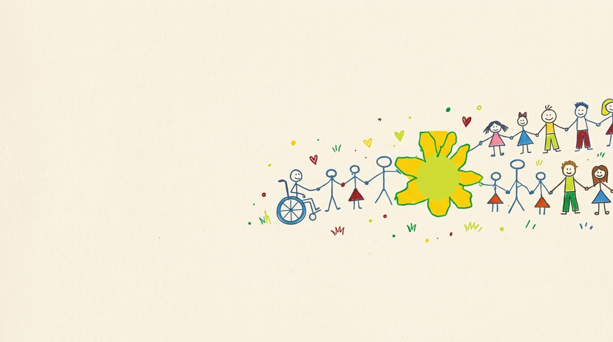

¿Cómo ayudar?
Somos una ONG sin fines de lucro. Tu aporte es esperanza para cada joven que acompañamos.

Cualquier ayuda es bienvenida
Tu ayuda no tiene que ser solo dinero. Todo lo que puedas dar nos ayuda a seguir adelante.
- DineroUna donación única o todos los meses.
- AlimentosNo perecederos y también perecederos.
- Tus horasTu tiempo, aunque sea un rato por semana.
- Tus ideasPropuestas para talleres, eventos o difusión.
- Tu trabajoTu oficio o profesión al servicio de la fundación.
¡Muchas gracias!
Hoy necesitamos arreglar el techo
El techo de chapa de la sede está muy deteriorado: tiene perforaciones y el desagüe falla. Cada vez que llueve se filtra el agua y daña el cielorraso y lo que está debajo.
Para repararlo necesitamos:
- Membrana líquida o recubrimiento de caucho para el techo
- Mejorar el desagüe
- Reparar el cielorraso
- Mano de obra para hacer el trabajo

Doná ahora
Cada aporte se transforma en talleres, materiales, traslados y profesionales que acompañan a los jóvenes.
¿Querés saber en qué se usa? Mirá nuestra rendición de cuentas.
Doná ahora
Pago seguro con Mercado Pago. Podés donar una vez o todos los meses.
También por transferencia: alias [alias.fundacion] · CBU [0000000000000000000000]
Voluntariado
Sumá tu tiempo y tus ganas. No hace falta experiencia: te acompañamos desde el primer día.
- Talleres de arte, oficios y deporte
- Apoyo escolar
- Eventos y campañas de la fundación
- [Otras áreas donde necesiten ayuda]
Padrinos y empresas
Apadriná un taller, doná materiales o servicios, o sumá a tu equipo en una jornada solidaria. Agradecemos públicamente a cada empresa en nuestras redes. [Si la fundación tiene exención de Ganancias, las donaciones de empresas son deducibles.]
Empresas que nos acompañan
Otras formas de ayudar
La fundación se sostiene con el esfuerzo de las familias. Sumarte a estas acciones también ayuda:
Bono contribución anual
Comprá tu bono y participá. [Precio y fecha del sorteo]
Feria americana
Doná ropa en buen estado o vení a comprar a nuestras ferias de ropa usada.
Venta de pollos
Encargá tu pollo en las próximas ventas. [Fecha y cómo encargar]
Visitanos y compartí
Conocé nuestro espacio y seguinos en Facebook e Instagram como Fundación Afadima.